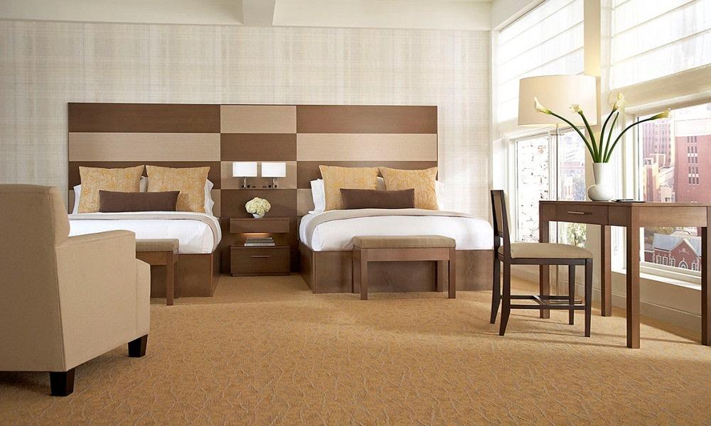

HOTELS, RESTAURANTS & HOSPITALITY
Refresh the furniture.
Keep the character.
On-site repairs for furniture and casework during renovations, upgrades and everyday use. Address scratches, watermarks, shipping damage and worn finishes without treating every piece as a replacement.
- Furniture & casework touch-ups
- Color matching, changes & correction
- Shipping & installation damage